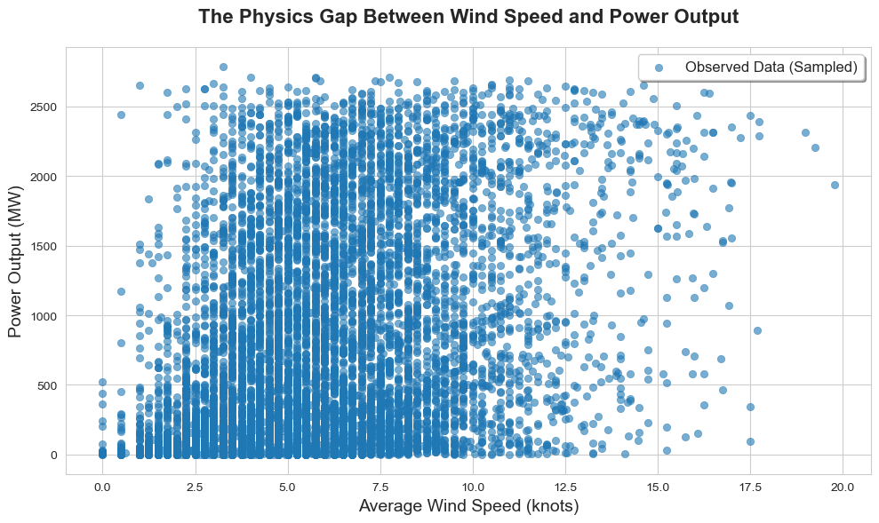
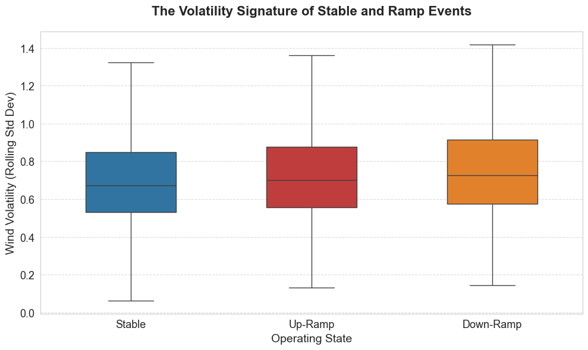
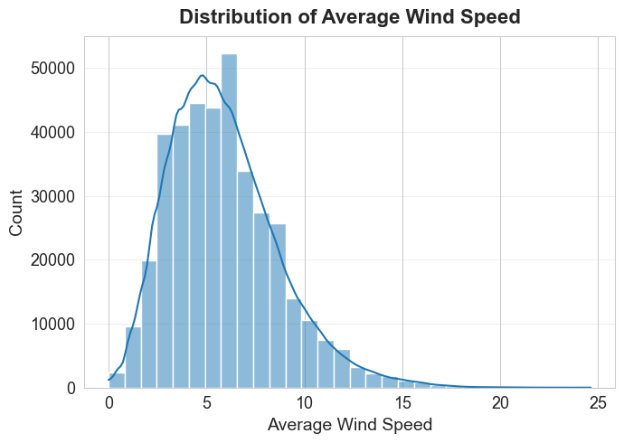
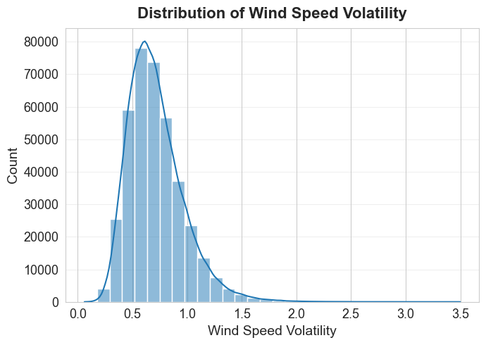
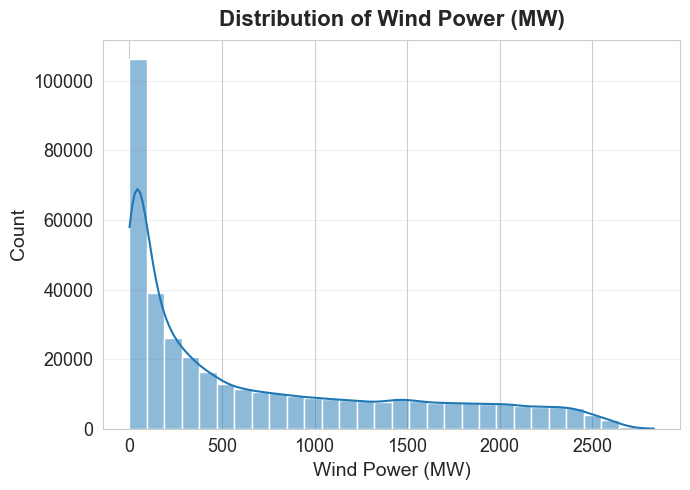
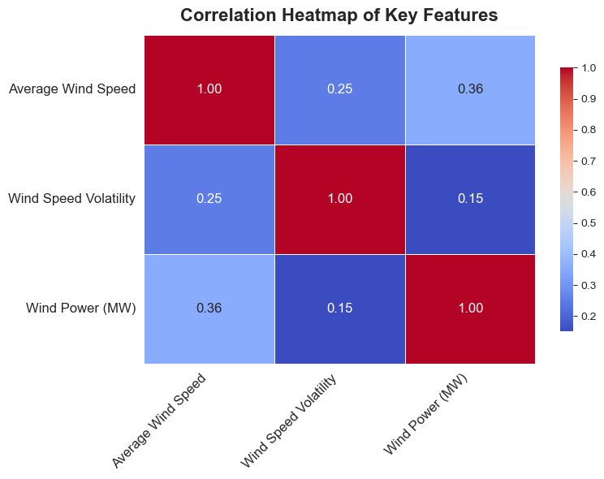
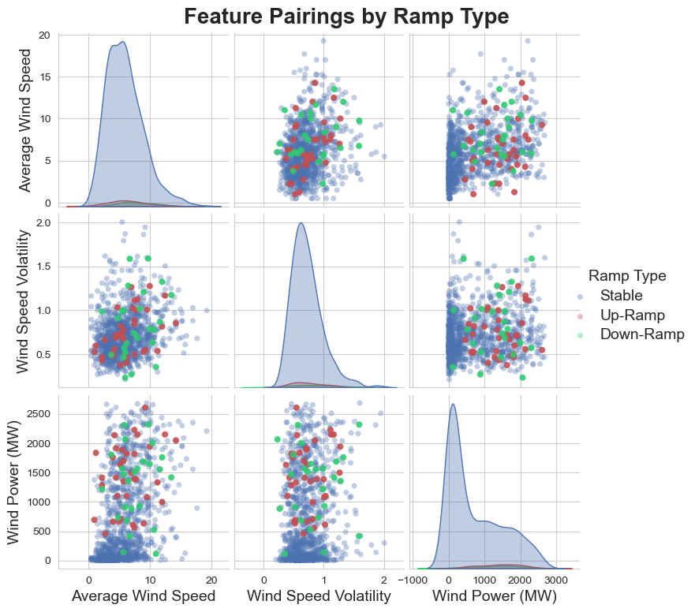
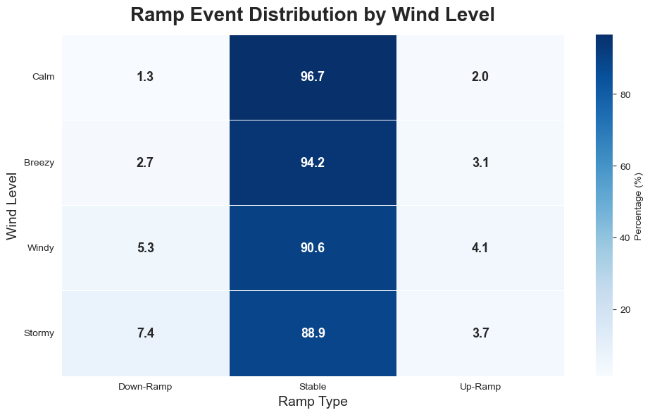
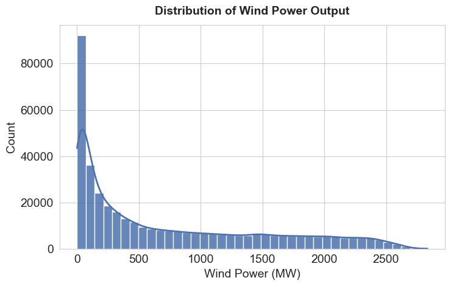
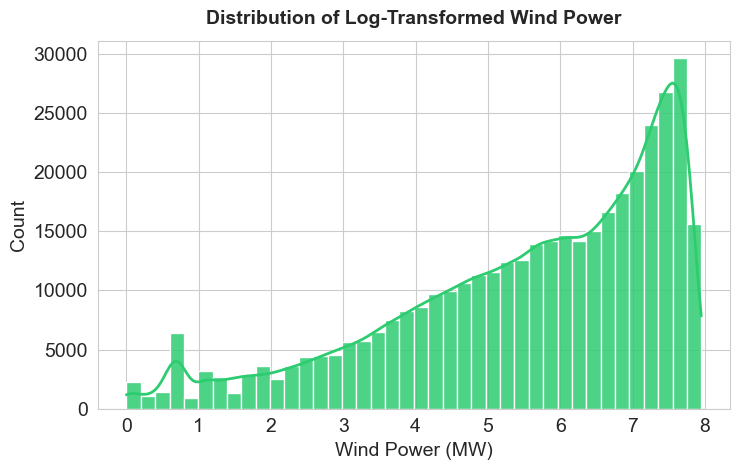

import pandas as pd
import numpy as np
import matplotlib.pyplot as plt
import seaborn as sns
from scipy import stats
from sklearn.preprocessing import MinMaxScaler, StandardScaler
# =====================================================
# 0. Data Preparation
# =====================================================
df = pd.read_csv("../../data/processed-data/BPA_Cleaned_Final_Robust.csv")
df['Timestamp'] = pd.to_datetime(df['Timestamp'])
df = df.set_index('Timestamp').sort_index()
print("Data Loaded. Shape:", df.shape)
# Compute average wind speed across all wind sensors
wind_cols = [c for c in df.columns if 'sknt' in c]
df['Avg_Wind_Speed'] = df[wind_cols].mean(axis=1)
# Compute wind speed volatility (1-hour rolling standard deviation)
df['Wind_Volatility'] = df['Avg_Wind_Speed'].rolling(window=12).std()
# Compute power change between consecutive time steps
df['Power_Diff'] = df['Power_MW'].diff()
# Define ramp threshold using the 95th percentile of absolute power change
ramp_threshold = df['Power_Diff'].abs().quantile(0.95)
# Binary ramp indicator
df['Ramp_Type'] = (df['Power_Diff'].abs() > ramp_threshold).astype(int)
# Ramp direction classification
df['Ramp_Type_Label'] = df['Power_Diff'].apply(
lambda x: 'Up-Ramp' if x > ramp_threshold
else ('Down-Ramp' if x < -ramp_threshold else 'Stable')
)
print(f"Ramp Threshold (95th percentile): {ramp_threshold:.2f} MW")
print("Ramp Event Counts:\n", df['Ramp_Type_Label'].value_counts())
features_num = ['Avg_Wind_Speed', 'Wind_Volatility', 'Power_MW']
categorical_cols = ['Ramp_Type_Label']
df_sample = df.sample(n=10000, random_state=42)
# Set Style
sns.set_style("whitegrid")
plt.figure(figsize=(10, 6))
# 2. Plot with Legend Label
sns.scatterplot(
data=df_sample,
x='Avg_Wind_Speed',
y='Power_MW',
alpha=0.6,
color='#1f77b4',
edgecolor=None,
label='Observed Data (Sampled)'
)
# Titles and Labels
plt.title('The Physics Gap Between Wind Speed and Power Output', fontsize=16, fontweight='bold', pad=20)
plt.xlabel('Average Wind Speed (knots)', fontsize=14)
plt.ylabel('Power Output (MW)', fontsize=14)
# 3. Legend in Upper Right
plt.legend(loc='upper right', fontsize=12, frameon=True, shadow=True)
plt.tight_layout()
plt.show()
import matplotlib.pyplot as plt
import seaborn as sns
# Clean data: remove missing labels and reset index to prevent alignment errors
df_clean = df.dropna(subset=['Ramp_Type_Label']).copy().reset_index(drop=True)
# Define color palette for ramp types
my_palette = {
"Stable": "#1f77b4", # Blue
"Up-Ramp": "#d62728", # Red
"Down-Ramp": "#ff7f0e" # Orange
}
# Initialize figure
plt.figure(figsize=(10, 6))
ax = sns.boxplot(
data=df_clean,
x='Ramp_Type_Label',
y='Wind_Volatility',
palette=my_palette,
showfliers=False,
width=0.5,
hue='Ramp_Type_Label'
)
# Set chart titles and labels
plt.title('The Volatility Signature of Stable and Ramp Events',
fontsize=16, fontweight='bold', pad=20)
plt.xlabel('Operating State', fontsize=14)
plt.ylabel('Wind Volatility (Rolling Std Dev)', fontsize=14)
plt.xticks(fontsize=13)
plt.yticks(fontsize=13)
# Add gridlines for readability
plt.grid(axis='y', linestyle='--', alpha=0.7)
# Optimize layout and display
plt.tight_layout()
plt.show()
# =====================================================
# 1. Univariate Analysis
# =====================================================
print("\n--- 1. Univariate Analysis ---")
# Numerical summary statistics
print("Numerical Summary:")
print(df[features_num].describe().T[['mean', '50%', 'std', 'min', 'max']])
def plot_feature_distributions(df, features, label_map=None, bins=30):
"""Plot histogram + KDE for numerical features."""
TITLE_SIZE = 16
LABEL_SIZE = 14
TICK_SIZE = 13
COLOR = "#1f77b4"
if label_map is None:
label_map = {c: c.replace("_", " ") for c in features}
for col in features:
pretty = label_map.get(col, col.replace("_", " "))
plt.figure(figsize=(7, 5))
sns.histplot(df[col].dropna(), bins=bins, kde=True, color=COLOR)
plt.title(f"Distribution of {pretty}", fontsize=TITLE_SIZE, fontweight="bold", pad=10)
plt.xlabel(pretty, fontsize=LABEL_SIZE)
plt.ylabel("Count", fontsize=LABEL_SIZE)
plt.xticks(fontsize=TICK_SIZE)
plt.yticks(fontsize=TICK_SIZE)
plt.grid(axis="y", alpha=0.3)
plt.tight_layout()
plt.show()
features = ["Avg_Wind_Speed", "Wind_Volatility", "Power_MW"]
label_map = {
"Avg_Wind_Speed": "Average Wind Speed",
"Wind_Volatility": "Wind Speed Volatility",
"Power_MW": "Wind Power (MW)"
}
plot_feature_distributions(df, features, label_map=label_map, bins=30)
# =====================================================
# 2. Bivariate & Multivariate Analysis
# =====================================================
print("\n--- 2. Bivariate & Multivariate Analysis ---")
# Correlation matrix and heatmap
corr_matrix = df[features_num].corr()
pretty_labels = [label_map.get(c, c.replace("_", " ")) for c in corr_matrix.columns]
plt.figure(figsize=(8, 6))
ax = sns.heatmap(
corr_matrix,
annot=True,
fmt=".2f",
cmap="coolwarm",
linewidths=0.5,
cbar_kws={"shrink": 0.8},
annot_kws={"size": 12}
)
ax.set_xticklabels(pretty_labels, rotation=45, ha="right", fontsize=12)
ax.set_yticklabels(pretty_labels, rotation=0, fontsize=12)
plt.title(
"Correlation Heatmap of Key Features",
fontsize=16,
fontweight="bold",
pad=12
)
plt.tight_layout()
plt.show()
# Pairwise feature relationships
plot_sample = df.sample(n=1000, random_state=42)
pretty_labels = {
"Avg_Wind_Speed": "Average Wind Speed",
"Wind_Volatility": "Wind Speed Volatility",
"Power_MW": "Wind Power (MW)"
}
plot_sample_renamed = plot_sample.rename(columns=pretty_labels)
x_vars = list(pretty_labels.values())
g = sns.pairplot(
plot_sample_renamed,
vars=x_vars,
hue="Ramp_Type_Label",
palette=["#4C72B0", "#C44E52", "#2ECC71"],
diag_kind="kde",
plot_kws={
"alpha": 0.35,
"s": 26,
"edgecolor": "none"
},
diag_kws={
"fill": True,
"alpha": 0.35
}
)
g.fig.suptitle(
"Feature Pairings by Ramp Type",
fontsize=20,
fontweight="bold",
y=1.02
)
for ax in g.axes.flatten():
if ax is not None:
ax.set_xlabel(ax.get_xlabel(), fontsize=14)
ax.set_ylabel(ax.get_ylabel(), fontsize=14)
# Overlay ramp events for emphasis
ramp_df = plot_sample_renamed[
plot_sample_renamed["Ramp_Type_Label"].isin(["Up-Ramp", "Down-Ramp"])
].copy()
color_map = {
"Up-Ramp": "#C44E52",
"Down-Ramp": "#2ECC71"
}
legend = g._legend
legend.set_title("Ramp Type", prop={"size": 14})
for text in legend.get_texts():
text.set_fontsize(14)
for i, y in enumerate(x_vars):
for j, x in enumerate(x_vars):
ax = g.axes[i, j]
if i == j:
continue
for cls in ["Up-Ramp", "Down-Ramp"]:
sub = ramp_df[ramp_df["Ramp_Type_Label"] == cls]
ax.scatter(
sub[x], sub[y],
s=34,
alpha=0.85,
color=color_map[cls],
edgecolors="none",
zorder=10
)
plt.show()
# Categorical interaction via crosstab
plt.figure(figsize=(10, 6))
df['Wind_Level'] = pd.cut(
df['Avg_Wind_Speed'],
bins=[0, 5, 10, 15, 100],
labels=['Calm', 'Breezy', 'Windy', 'Stormy'],
include_lowest=True
)
ct = pd.crosstab(
df['Wind_Level'],
df['Ramp_Type_Label'],
normalize='index'
) * 100
sns.heatmap(
ct,
annot=True,
fmt=".1f",
cmap="Blues",
linewidths=0.6,
linecolor="white",
cbar_kws={'label': 'Percentage (%)'},
annot_kws={"size": 13, "weight": "bold"}
)
plt.title(
"Ramp Event Distribution by Wind Level",
fontsize=20,
fontweight="bold",
pad=14
)
plt.xlabel("Ramp Type", fontsize=14)
plt.ylabel("Wind Level", fontsize=14)
plt.xticks(rotation=0)
plt.yticks(rotation=0)
plt.tight_layout()
plt.show()
# =====================================================
# 3. Distribution & Normalization
# =====================================================
print("\n--- 3. Distribution & Normalization ---")
plt.figure(figsize=(7.5, 4.8))
df['Log_Power_MW'] = np.log1p(df['Power_MW'])
sns.histplot(
df['Power_MW'],
bins=40,
kde=True,
color="#4C72B0",
edgecolor="white",
alpha=0.85,
line_kws={"linewidth": 2}
)
plt.title(
"Distribution of Wind Power Output",
fontsize=14,
fontweight="bold",
pad=12
)
plt.tick_params(axis='both', labelsize=14)
plt.xlabel("Wind Power (MW)", fontsize=14)
plt.ylabel("Count", fontsize=14)
plt.tight_layout()
plt.show()
plt.figure(figsize=(7.5, 4.8))
sns.histplot(
df['Log_Power_MW'],
bins=40,
kde=True,
color="#2ECC71",
edgecolor="white",
alpha=0.85,
line_kws={"linewidth": 2}
)
plt.title(
"Distribution of Log-Transformed Wind Power",
fontsize=14,
fontweight="bold",
pad=12
)
plt.tick_params(axis='both', labelsize=14)
plt.xlabel("Wind Power (MW)", fontsize=14)
plt.ylabel("Count", fontsize=14)
plt.tight_layout()
plt.show()
# Normalization examples
scaler_mm = MinMaxScaler()
scaler_std = StandardScaler()
wind_mm = scaler_mm.fit_transform(df[['Avg_Wind_Speed']])
wind_std = scaler_std.fit_transform(df[['Avg_Wind_Speed']])
print(f"Original Wind Range: {df['Avg_Wind_Speed'].min():.2f} - {df['Avg_Wind_Speed'].max():.2f}")
print(f"Min-Max Scaled Range: {wind_mm.min():.2f} - {wind_mm.max():.2f}")
print(f"Z-Score Scaled Mean: {wind_std.mean():.2f}, Std: {wind_std.std():.2f}")
# =====================================================
# 4. Statistical Tests
# =====================================================
print("\n--- 4. Statistical Tests ---")
# T-test: volatility difference
group_stable = df[df['Ramp_Type'] == 0]['Wind_Volatility'].dropna()
group_ramp = df[df['Ramp_Type'] != 0]['Wind_Volatility'].dropna()
t_stat, p_val = stats.ttest_ind(group_stable, group_ramp, equal_var=False)
print(f"T-Test (Volatility): T-stat={t_stat:.4f}, P-value={p_val:.4e}")
if p_val < 0.05:
print(">> Result: Significant difference detected.")
else:
print(">> Result: No significant difference detected.")
# Chi-square test: wind level vs ramp occurrence
contingency_table = pd.crosstab(df['Wind_Level'], df['Ramp_Type_Label'])
chi2, p, dof, expected = stats.chi2_contingency(contingency_table)
print(f"\nChi-Square Test (Wind Level vs Ramp): Chi2={chi2:.4f}, P-value={p:.4e}")Data Loaded. Shape: (388665, 10)
Ramp Threshold (95th percentile): 44.40 MW
Ramp Event Counts:
Ramp_Type_Label
Stable 369231
Up-Ramp 10459
Down-Ramp 8975
Name: count, dtype: int64

--- 1. Univariate Analysis ---
Numerical Summary:
mean 50% std min max
Avg_Wind_Speed 5.870528 5.500000 2.802192 0.000000 24.62500
Wind_Volatility 0.713524 0.675252 0.257621 0.061391 3.49775
Power_MW 722.472696 391.000000 760.766574 0.000000 2833.50000


--- 2. Bivariate & Multivariate Analysis ---


--- 3. Distribution & Normalization ---

Original Wind Range: 0.00 - 24.62
Min-Max Scaled Range: 0.00 - 1.00
Z-Score Scaled Mean: 0.00, Std: 1.00
--- 4. Statistical Tests ---
T-Test (Volatility): T-stat=-22.4021, P-value=6.9814e-110
>> Result: Significant difference detected.
Chi-Square Test (Wind Level vs Ramp): Chi2=2943.1687, P-value=0.0000e+00